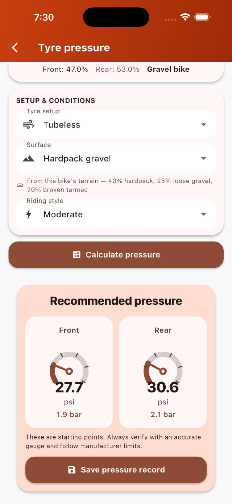

Every setting on every bike, remembered.
Tyre pressure, gear ratios and fit — worked out for your exact kit, then saved to the bike it belongs to. Works offline. No account.
Coming to the App Store
Listed on the App Store as Bike Tire Pressure & Gears.

Tyre pressure
For your actual tyre, front and rear independently, adjusted for weight, surface and how you ride.
Gear ratios
Every combination on your drivetrain, plus a mullet builder and side-by-side groupset comparison.
Your stable
Bikes, wheels, tyres and components with cost and mileage — each bike remembers its own setup.
Fit journal
Log your position and see exactly what changed between two sessions, and by how much.
Coming to the App Store
Built to stay yours
Cyclist Companion has no server of its own. There is no account, no tracking, no advertising and no analytics — nothing you enter leaves your device unless you export a backup yourself. The app uses the network in one situation only: buying or restoring the optional upgrade, which Apple handles end to end. That is not a policy promise; it is how the app is built.
Read the privacy policy, which is short because there is very little to say.
No black box
The pressure model is published in full, including the modifiers it applies and the point at which it stops being reliable. See how pressure is calculated.
Help
Answers to common questions, and how to reach a person, are on the support page.